操作方法
画面の見方と、1週間の進め方を紹介します。
動画で見る遊び方
ホーム画面から試合、補強、経営までの流れを、約1分の動画で紹介します。
はじめに
- スマホ（Android）：はじめは縦向きで遊び、3Dの試合の間だけ横向きになります。「設定」の「画面の向き」で、試合以外の画面と3Dの試合を、それぞれ縦持ち・横持ちから選べます。操作はタップ・長押し・ドラッグです。
- PC（Windows）：横長のウィンドウで遊びます。操作はクリックです。ウィンドウを縦長にすると、スマホと同じ縦向きの画面になります。
- 画面左上の「＜」で1つ前の画面に戻ります。Android の戻るボタンや、PC の Esc キーでも戻れます。
- セーブデータは3つまで作れます。ゲームは自動で保存されます。
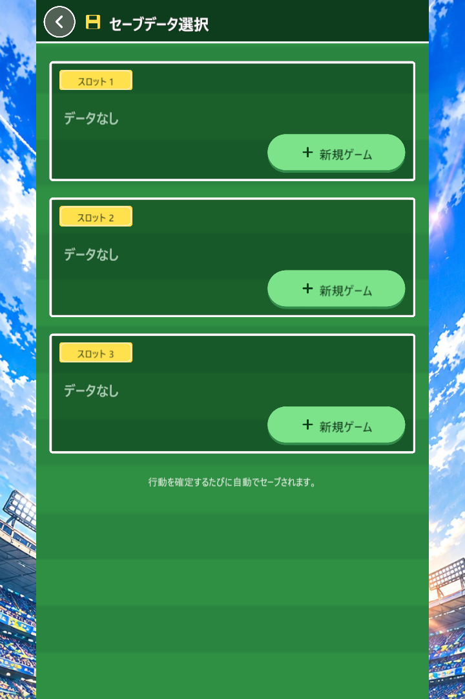

やることのまとめ
最初に一度だけやること、毎週・毎月・毎年やることをまとめました。迷ったらここを見てください。
最初にやること
- クラブを作る：クラブ名・略称・エンブレムを決めます。
- シーズン準備（7月）を進める：ゲームは7月から始まります。スポンサーと契約し、キャンプを行うか決めます。
- 戦術を決める：「チーム」→「戦術」で、まずは「おまかせ」でスタメンを決めて「保存」。自動交代の条件も決めておくと楽です。
- 練習を決める：「チーム」→「練習」で、チームの練習メニューを選びます。
- スタッフを確かめる：「育成・補強」→「コーチ」「スカウト」で、コーチを雇い、スカウトに探すポジションを指示します。
- ユースを見る：「育成・補強」→「ユース」で、今年の候補生を入団させます（「回想して入団」でさらに伸ばせます）。
- 設定を確かめる：試合の表示（3D／2D）、試合の速さ、スマホの画面の向き（縦持ち／横持ち）、文字の大きさ（小・中・大）を選びます。
毎年やること
- 7月：シーズン準備：順位発表・年間表彰 → 契約更新 → フリー移籍 → スポンサー → キャンプの順に進めます。
- 7月：ユースの候補生：毎年新しい候補生が来ます。入団させるか、回想して入団させるか決めます。
- 7月1週〜9月2週：夏の移籍期間：選手の獲得・放出はこの間だけ。足りないポジションを補強します。
- 7〜8月：アジアの大会：前のシーズンに1部で3位以内か、国内カップで優勝していれば出場できます。
- 8月：リーグ開幕：リーグ戦は翌年6月まで。国内カップも1年を通して行われます。
- 12月：世界クラブ大会：アジアの大会で優勝していれば出場できます。この間リーグ戦はお休みです。
- 2月1週〜3月1週：冬の移籍期間：シーズン途中の補強のチャンスです。
- 6月：シーズン終了：昇格・降格が決まります。「年間の振り返り」で1年を見返せます。
毎月やること
- 月間レポートを見る：月が変わると、その月の試合結果と収支のまとめが出ます。
- お金を確かめる：「クラブ経営」→「収支」「固定費・見込み」で、赤字になっていないか確かめます。
- 施設を強化する：資金に余裕があれば「施設強化」。工事には4週（スタジアムは8週）かかります。
- スカウトの報告を見る：見つかった選手を確かめ、移籍期間に備えます。
- 契約を確かめる：「チーム」→「契約更新」で、契約が残り少ない主力を早めに延長します。
試合を見なくてよい週は、ホームの「翌月1週まで」で、まとめて次の月まで進められます（途中の試合は自動で行い、ハイライトは出ません）。
毎週やること
- 練習：伸ばしたい能力のメニューを選びます。疲れがたまった選手は、個別に休ませます（3人まで）。「オススメ」の印は、チームの今の状態から見たおすすめのメニューです。練習の画面から、そのまま試合や次の週へ進めます。
- 試合の準備：疲れ・調子・怪我を見て、スタメンを入れ替えます。試合前の設定で相手分析とエース対決を確かめます。
- 試合：「試合へ」から試合をします。3Dならハーフタイムに作戦・フォーメーション・交代を指示できます。
- 結果とお知らせ：今週の結果で、伸びた能力やできごとを確かめます。メニューの赤い数字は、確認が必要なことの数です。
練習や戦術の数字、施設の効果、キャンプの選び方などは、攻略のページで詳しく紹介しています。
ホーム画面
- 上の帯：資金・人気・サポーターの数。
- クラブ名の下：今いるリーグと日付（1ターン＝1週間）。
- 右の大きな枠：今週やること。試合の週は「試合へ」、試合のない週は「次の週へ進む」でゲームが進みます。
- 左のメニュー：5つの分類から各画面を開きます（下の表）。赤い数字は、確認が必要なことの数です。
- リーグ順位・お知らせ：今の順位と、最近のできごと。
- いちばん下の帯：どの画面からでも、ホームと5つの分類に移れます。
| メニュー | 中にある画面 |
|---|---|
| チーム | 選手一覧・戦術とフォーメーション・練習・契約更新 |
| 試合・大会 | スケジュール・リーグ順位・大会（国内カップ・アジアの大会・世界クラブ大会）・友人チームと対戦 |
| 育成・補強 | ユース・移籍・スカウト・コーチ |
| クラブ経営 | 収支・月間レポート・スポンサー・施設強化・スタジアム・固定費と見込み |
| 記録・その他 | お知らせ・タイトルと目標・年間の振り返り・クラブの歩み・実績・チームデータ交換・設定とセーブ |
1週間の進め方
- 練習を決める。「チーム」→「練習」で、チームの練習メニューと、休ませる選手（3人まで）を選びます。
- 試合の準備をする。「チーム」→「戦術」で、フォーメーション・スタメン・戦術・自動交代を決めます。「おまかせ」で自動でも決められます。
- 試合をする。ホームの「試合へ」から試合前の設定を確かめ、「試合開始」を押します。
- 週の結果を見る。試合の結果、練習で伸びた能力、お知らせが表示されます。次の週へ進みます。
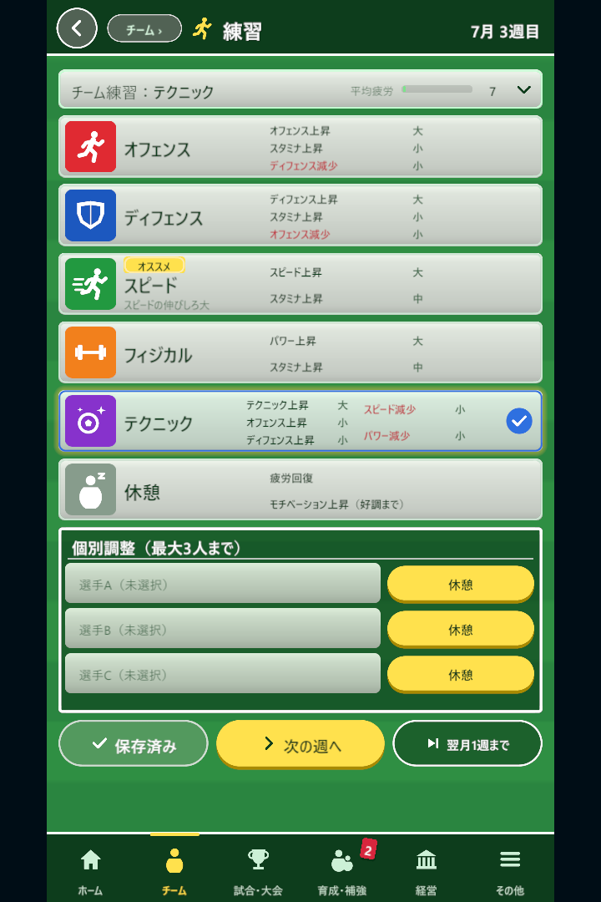


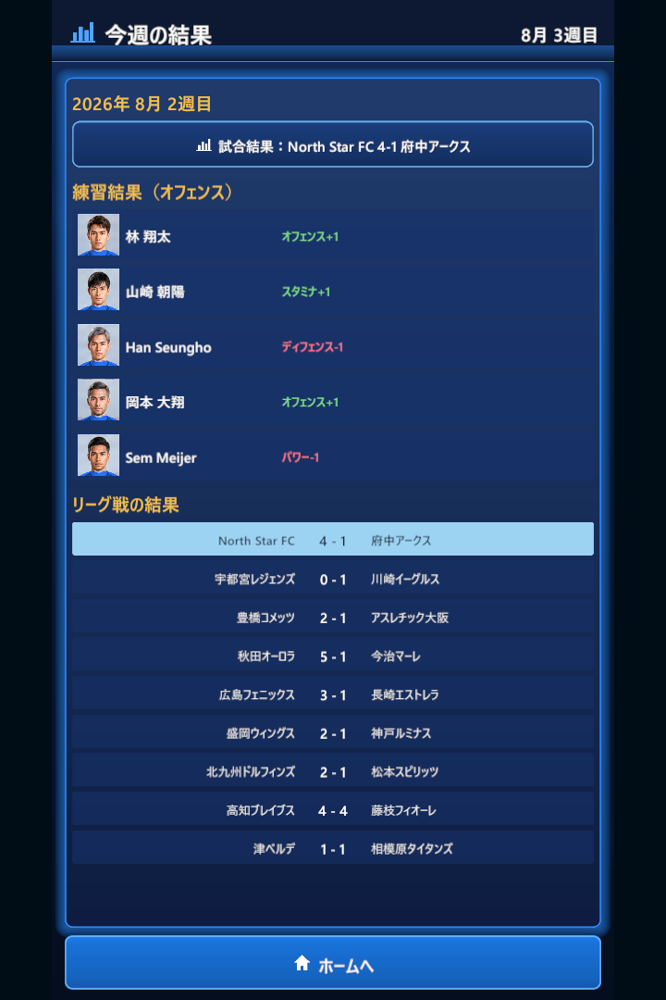
練習で経験値がたまると能力が上がります。疲れがたまると、練習の効果も試合の動きも落ちます。疲れた選手は休ませましょう。
同じ週にリーグ戦とカップ戦の2試合があるときは、1試合目のあとに、2試合目のフォーメーション・スタメンを変えられます。
戦術とスタメン
- フォーメーション：上の欄から選びます（6種類）。
- 選手の入れ替え：ピッチ・ベンチ・控えの選手を、タップまたはドラッグで入れ替えます。ベンチには9人まで入れられ、入りきらない分は横にスクロールします。
- 選手の能力を見る：選手を長押しすると、能力やスキルが見られます。
- 戦術：攻撃重視・バランス・守備重視・カウンターなどから選びます。
- 自動交代：疲労時・リード時・ビハインド時など、選手を交代させる条件を決めます。
- 相手分析：試合前の設定でだけ見られます。次の相手の特徴を確かめられます。
変えた設定は「保存」を押すと残ります。
試合

「試合開始」を押すと、試合のしかたを選べます。
- 試合開始：3Dで試合を見ます。
- 結果だけ：試合を見ずに、2Dのハイライトで結果を見ます。
3Dの試合中にできること：
- 2倍速・4倍速・スキップ：試合を早送りできます。
- ハーフタイム：作戦・フォーメーション・選手交代を指示できます。選手をドラッグして重ねると能力を比べられ、離すと交代します。
- リプレイ：ゴールなどのリプレイは、画面をタップすると飛ばせます。
「設定」で、試合の表示を「3D（試合をする）」と「2D（ハイライト）」から選べます。スマホでは、3Dの試合を縦持ちでするか横持ちでするかも選べます。いつでも切り替えられます。
選手の名前と顔写真を変える
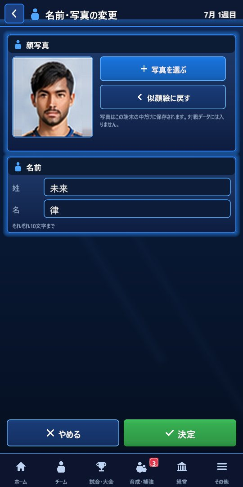
- 「チーム」→「選手一覧」から、自分のクラブの選手を開きます。
- 選手詳細の下にある「名前・写真」を押します。
- 「写真を選ぶ」で、スマホやPCの写真から顔写真を選びます。「似顔絵に戻す」で元の顔に戻せます。
- 姓と名を入れて（それぞれ10文字まで）、「決定」を押します。
写真は端末の中だけに保存されます。チームデータ交換で友だちに渡るのは名前だけです。
補強と育成
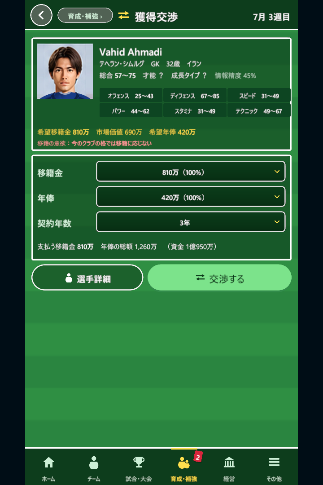
移籍
移籍できるのは、夏（7月1週〜9月2週）と冬（2月1週〜3月1週）だけです。「育成・補強」→「移籍」で選手を探し、「獲得交渉」で移籍金・年俸・契約年数を決めてオファーします。
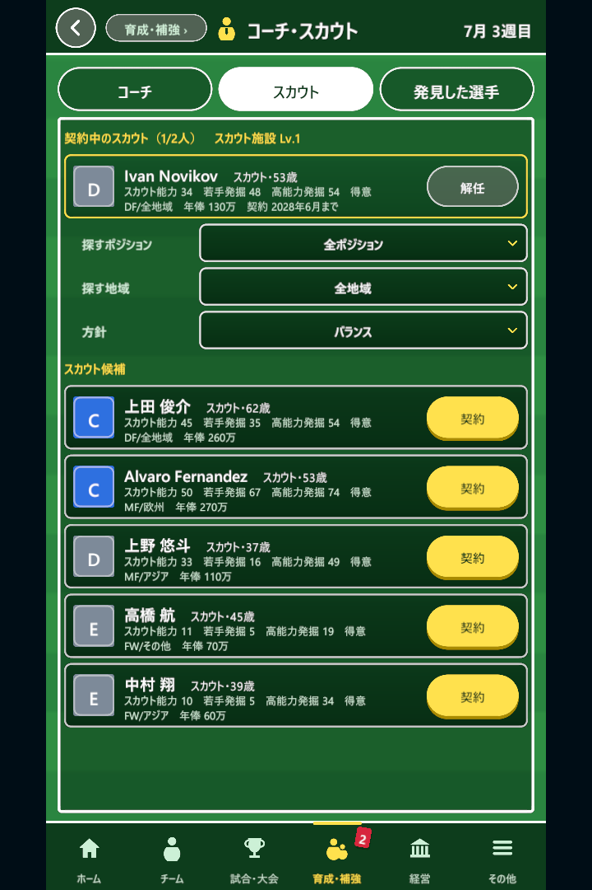
スカウト
他クラブの選手は、スカウトが見つけてくれます。探すポジションや地域を任務として指示できます。スカウトが調べた選手ほど、能力やスキルが正確に分かります。
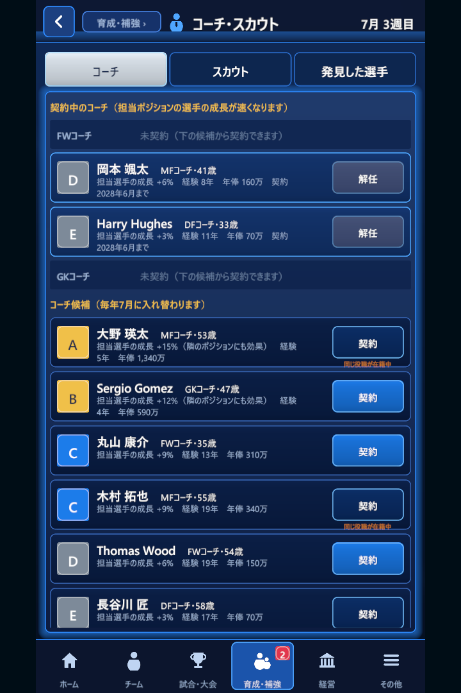
コーチ
FW・MF・DF・GKのコーチを雇うと、担当ポジションの選手が速く成長します。契約の最後の年度には、契約を延長できます。
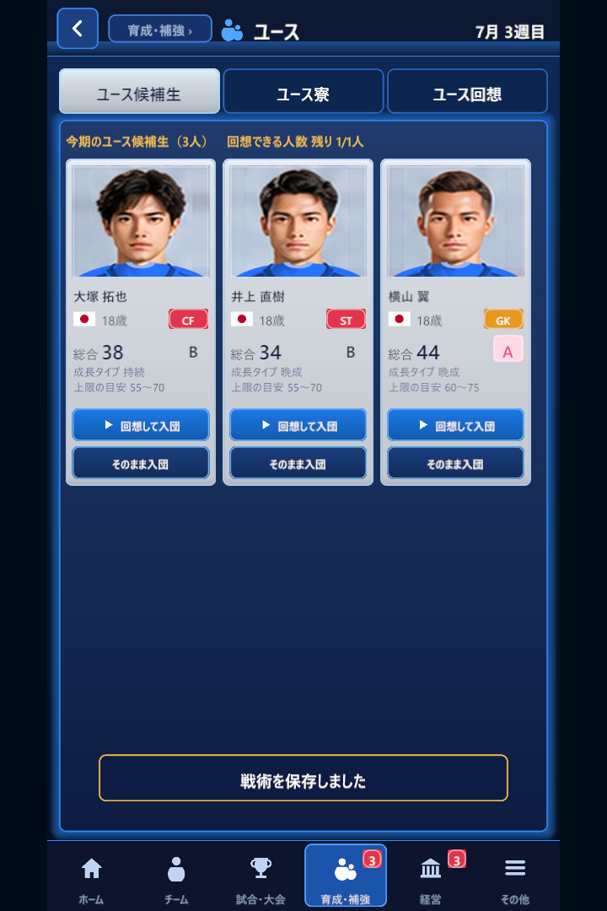
ユース
ユースの候補生を入団させます。「回想して入団」を選ぶと、ミニゲーム「ユース回想」で15〜18歳の育成を振り返り、能力やスキルを伸ばせます。
選手の詳細の画面と獲得交渉の画面は、左右にスワイプすると、開いた一覧の前後の選手に移れます。年間の振り返りも、スワイプで前後の年に移れます。
クラブ経営
- 収入：スポンサー料・入場料（ホームの試合）・リーグや大会の賞金。
- 支出：選手とスタッフの年俸、施設の費用など。
- スポンサー：契約は、シーズン準備（7月）の間だけ結べます。
- 施設：練習場やスタジアムなどを強化すると、育成や収入が良くなります。工事には時間がかかります。

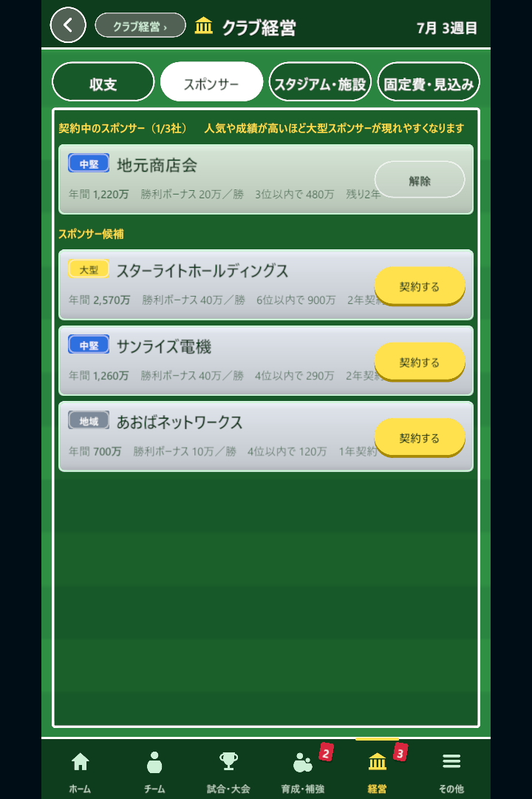
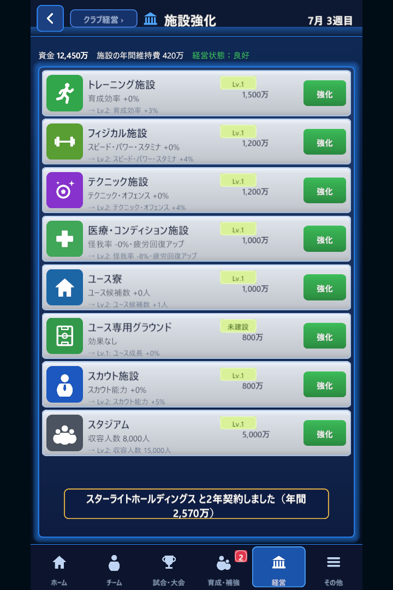
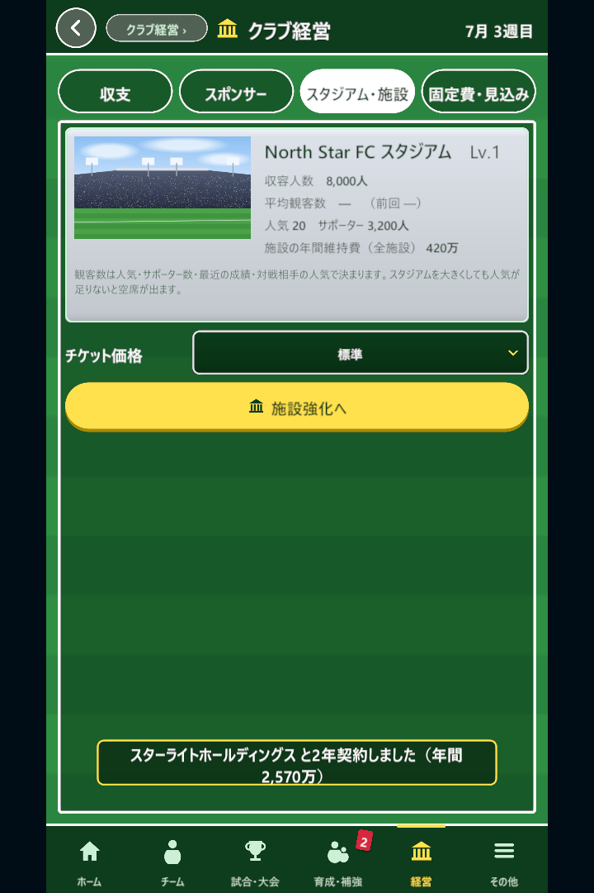
資金が尽きると補強ができなくなります。赤字が続かないように気をつけましょう。
攻略
練習と疲れ、成長タイプ、戦術、スキル、施設、キャンプなどの仕組みと数字は、攻略のページにまとめています。
シーズン準備（7月）
リーグ戦は8月に開幕し、翌年6月に閉幕します。7月はシーズン準備で、次の手続きを順番に行います。
- 順位発表・年間表彰：前のシーズンの結果を振り返ります。
- 契約更新：契約が切れる選手を更新するか、退団させるか決めます。
- フリー移籍：どこのクラブにも入っていない選手と交渉できます。
- スポンサー：スポンサーと契約します。
- キャンプ：キャンプ地とテーマを選ぶと、選手の能力の上限が上がります（行わなくてもかまいません）。
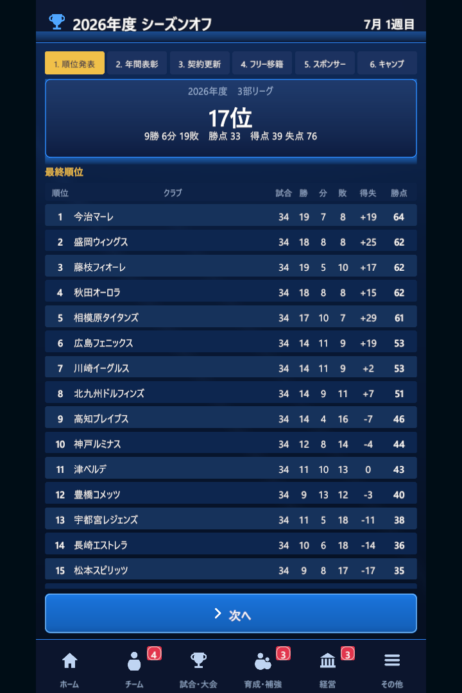
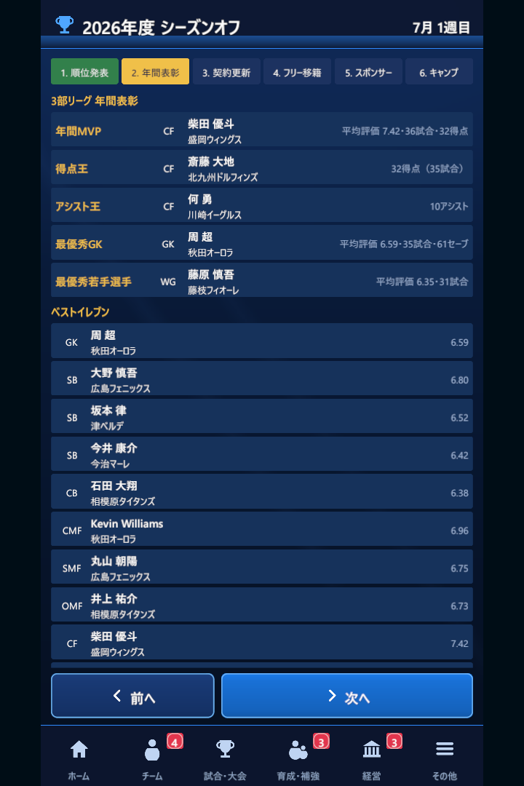
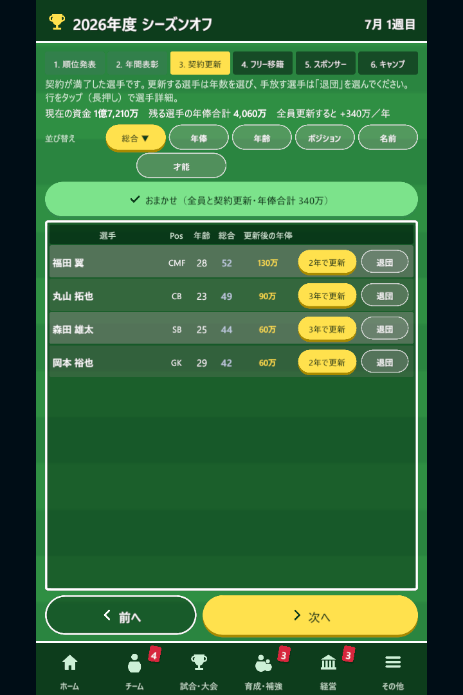
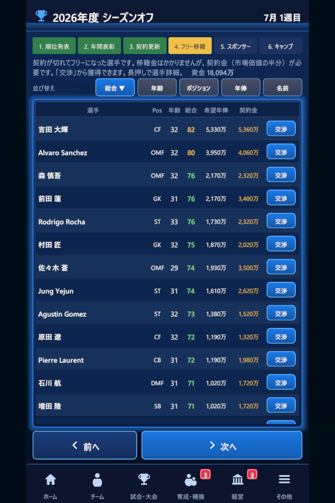
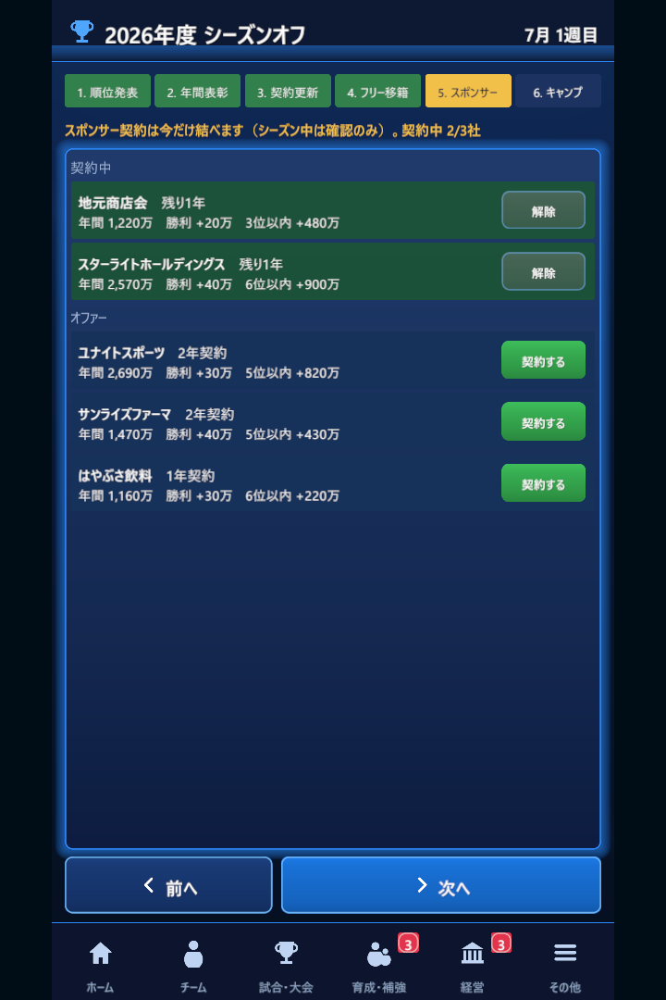
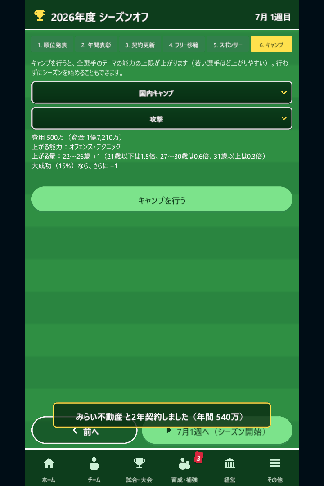